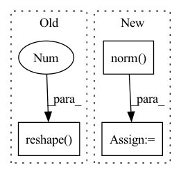

Pattern ID :2057
Before Change
B, C = x.shape[:2]
ori_shape = x.shape
x = x.transpose(-1, 1).reshape( B, -1 , 3, C)
x = self.ln(x)
x = x.transpose(-1, 1).reshape(ori_shape)
return x
After Change
Returns:
features of the same shape after LN in each instance
norm = torch.norm( x, dim=2) + EPS // [B, C, N, ...]
norm_ln = self.ln(norm.transpose(1, -1)).transpose(1, -1)
norm = norm.unsqueeze(2)
norm_ln = norm_ln.unsqueeze(2)
x = x / norm * norm_ln
return x
In pattern: SUPERPATTERN
Frequency: 3
Non-data size: 3
Instances Fragment ID: 7507286
Project Name: wuziyi616/multi_part_assembly
Commit Name: 7e1267aa33c2c264299bb4955ef23b3961b17693
Time: 2022-06-29
Author: dazitu616@gmail.com
File Name: multi_part_assembly/models/modules/vnn/modules.py
M Class Name: VNLayerNorm
N Class Name: VNLayerNorm
M Method Name: forward(2)
N Method Name: forward(2)
M Parent Class: nn.Module
N Parent Class: nn.Module
M File Name: multi_part_assembly/models/modules/vnn/modules.py
N File Name: multi_part_assembly/models/modules/vnn/modules.py
M Start Line: 168
M End Line: 172
N Start Line: 168
N End Line: 172
Before Change
content_q = q if not self.norm_queries else q.softmax(dim=-2)
content_out = einsum("bhde,bhdn->bhen", context, content_q)
content_out = content_out.reshape( b, -1 , x, y)
content_out = self.to_out(content_out)
// todo: compute relative position attentions and sum to content_out
After Change
Yh = einsum("nixy,neiy->nexy", Sx, v)
del Ix
Yh = self.norm( Yh)
Iy = calc_reindexing_tensor(y, L, device)
Py = einsum("xir,rd->xid", Iy, self.rel_columns)
Sy = einsum("ndxy,xid->nixy", q, Py)
rel_pos_out = einsum("nixy,neiy->nexy", Sy, Yh)
del Iy
content_out = content_out + rel_pos_out Fragment ID: 7507284
Project Name: lucidrains/global-self-attention-network
Commit Name: 6e87bd0b96350f46edc8d4b4ccd582ecc868e22f
Time: 2020-10-05
Author: lucidrains@gmail.com
File Name: gsa_pytorch/gsa_pytorch.py
M Class Name: GSA
N Class Name: GSA
M Method Name: forward(2)
N Method Name: forward(2)
M Parent Class: nn.Module
N Parent Class: nn.Module
M File Name: gsa_pytorch/gsa_pytorch.py
N File Name: gsa_pytorch/gsa_pytorch.py
M Start Line: 47
M End Line: 57
N Start Line: 44
N End Line: 74
Before Change
input: torch.Tensor = bchw_to_bhwc(input)
// Unfold input
input: torch.Tensor = input.unfold(dimension=1, size=2, step=2).unfold(dimension=2, size=2, step=2)
input: torch.Tensor = input.reshape( batch_size, input.shape[1], input.shape[2], -1 )
// Normalize input
input: torch.Tensor = self.normalization(input)
// Perform linear mapping
output: torch.Tensor = bhwc_to_bchw(self.linear_mapping(input))After Change
x = bchw_to_bhwc(x).unfold(dimension=1, size=2, step=2).unfold(dimension=2, size=2, step=2)
x = x.permute(0, 1, 2, 5, 4, 3).flatten(3) // permute maintains compat with ch order in official swin impl
x = self.norm( x)
x = bhwc_to_bchw(self.reduction(x))
return x
Fragment ID: 7507289
Project Name: feng-lab/pytorch-image-models
Commit Name: c6e4b7895a7dbcd9b98396cbef383dd1c72b0ad3
Time: 2022-02-23
Author: rwightman@gmail.com
File Name: timm/models/swin_transformer_v2_cr.py
M Class Name: PatchMerging
N Class Name: PatchMerging
M Method Name: forward(2)
N Method Name: forward(2)
M Parent Class: nn.Module
N Parent Class: nn.Module
M File Name: timm/models/swin_transformer_v2_cr.py
N File Name: timm/models/swin_transformer_v2_cr.py
M Start Line: 712
M End Line: 722
N Start Line: 455
N End Line: 459